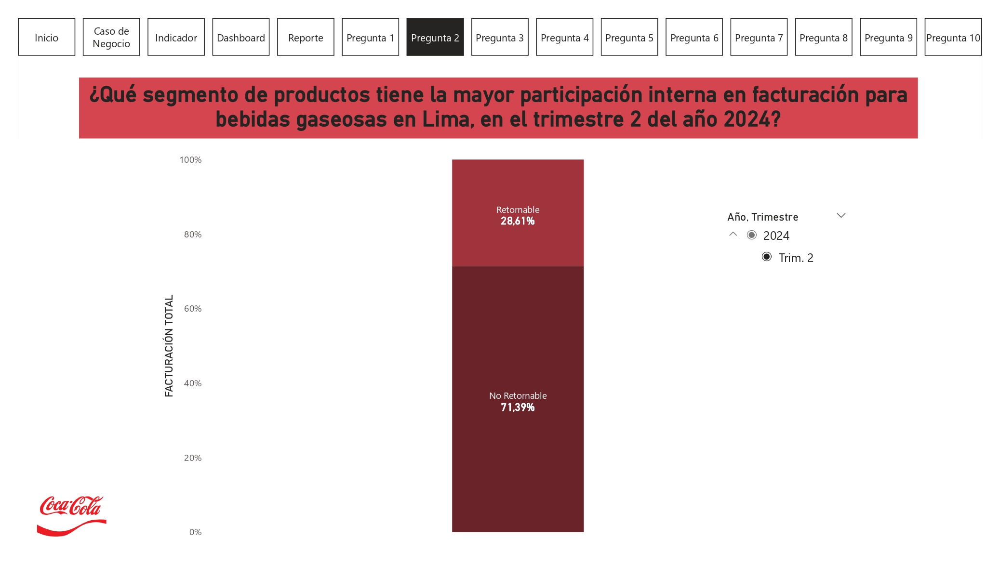
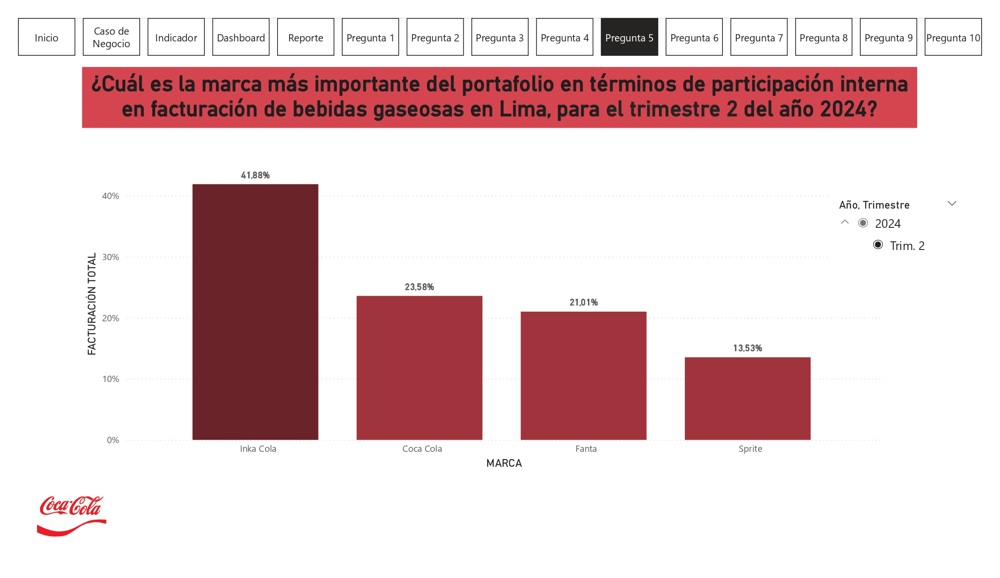
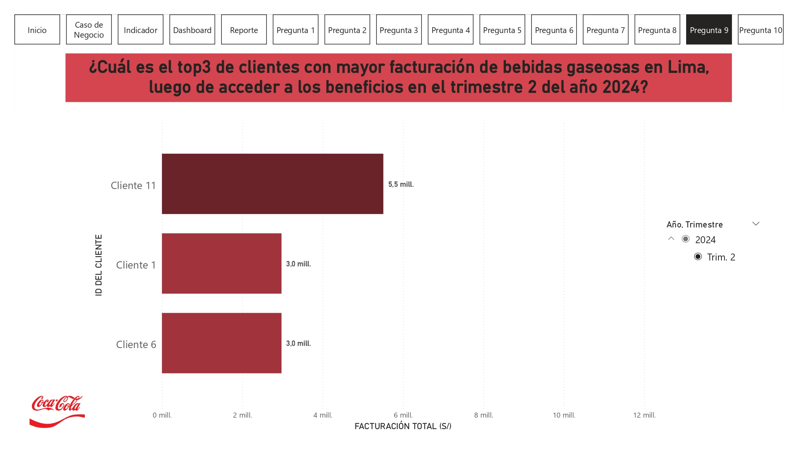
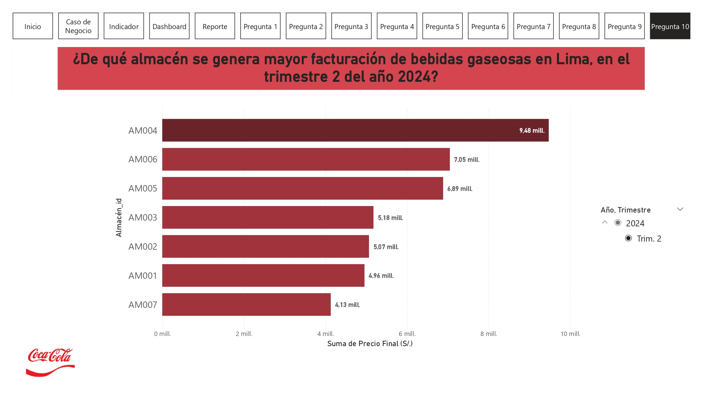

Preguntas
En base a la data de nuestro modelo de negocio se plantean 10 preguntas directamente relacionadas con el indicador que definimos previamente.
- Pregunta 1: ¿Cómo se distribuye la facturación total de bebidas gaseosas en Lima, por distrito en el trimestre 2 del año 2024?
- Pregunta 2: ¿Qué segmento de productos tiene la mayor participación interna en facturación para bebidas gaseosas en Lima, en el trimestre 2 del año 2024? 
- Pregunta 3: ¿Qué tipo de cliente tiene la mayor participación interna en términos de facturación para bebidas gaseosas en Lima en el trimestre 2 del año 2024?
- Pregunta 4: ¿Qué distribuidora contribuye en mayor medida a la facturación de bebidas gaseosas en Lima, en el trimestre 2 del año 2024?
- Pregunta 5: ¿Cuál es la marca más importante del portafolio en términos de participación interna en facturación de bebidas gaseosas en Lima, para el trimestre 2 del año 2024? 
- Pregunta 6: ¿Cuál es la presentación que concentra el mayor % de facturación para bebidas gaseosas en Lima, para el trimestre 2 del año 2024?
- Pregunta 7: ¿Qué volumen de producto del portafolio es el más importante en términos de facturación de bebidas gaseosas en Lima, para el trimestre 2 del año 2024?
- Pregunta 8: ¿Qué tipo de beneficio es el más efectivo en términos de facturación de bebidas gaseosas en Lima, en el trimestre 2 del año 2024?
- Pregunta 9: ¿Cuál es el top3 de clientes con mayor facturación de bebidas gaseosas en Lima, luego de acceder a los beneficios en el trimestre 2 del año 2024? 
- Pregunta 10: ¿De qué almacén se genera mayor facturación de bebidas gaseosas en Lima, en el trimestre 2 del año 2024? 